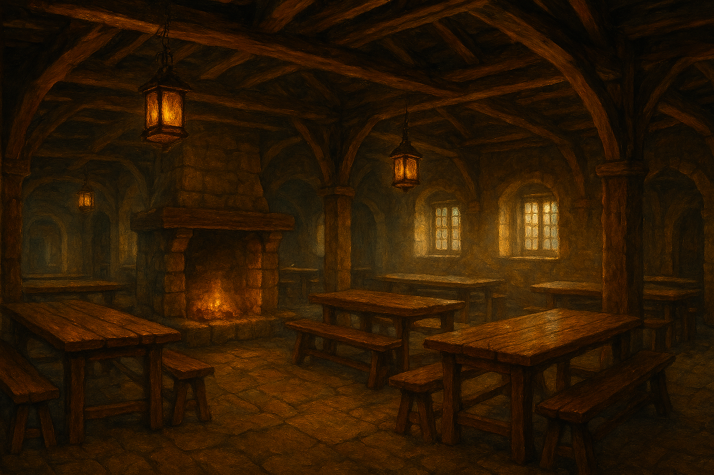
Life Along the Road
From food and firelight to shelter and stories, the Wayfarer’s Rest offers more than a place to stop.
About the Wayfarer’s Rest
The Wayfarer’s Rest was founded for those who travel the long roads of the Marchlands. This is a land defined by distance and uncertainty. Trade routes cut across contested borders, towns rise and fall with shifting alliances, and the threat of war is never far from the horizon. For those who move between settlements — merchants, messengers, pilgrims, and the displaced — the road is as dangerous as it is necessary. In response to this reality, the first Wayfarer’s Rest was built as a place where the road could pause. A tavern where safety was offered without question, and where all who entered were treated as travellers first, regardless of name or allegiance. Over time, that single hearth became the foundation of a wider tradition, carried from road to road across the Marchlands.
Food & Drink
Food was the first promise made by the Wayfarer’s Rest. The earliest taverns were founded along trade routes where travellers arrived tired, hungry, and uncertain of the road ahead. A warm meal was never meant to be a luxury, but a necessity — something dependable at the end of a long journey. From those beginnings grew a shared approach to cooking: simple dishes prepared with care, shaped by the land and markets surrounding each location. While menus vary from coast to woodland and town to frontier, the principle remains the same. Every kitchen is guided by tradition, practicality, and respect for the traveller’s need to be fed well before all else.
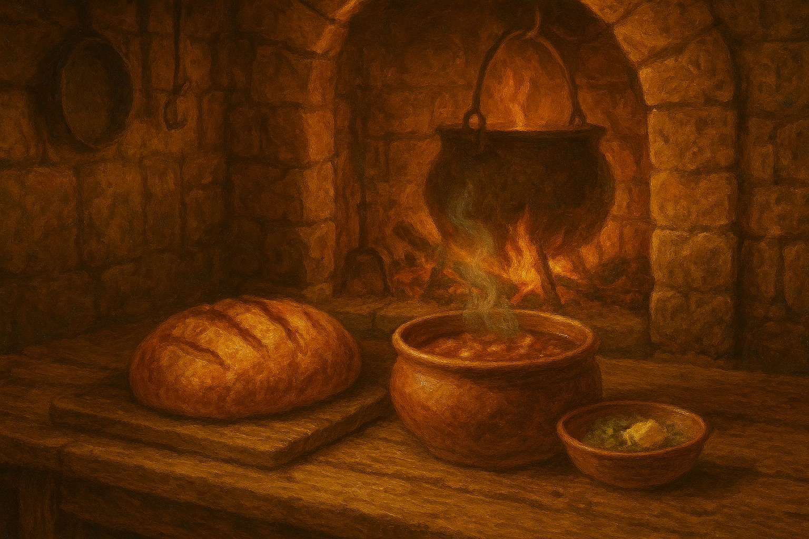
Rest & Shelter
The road does not treat every traveller kindly. For this reason, rest has always been treated as a responsibility rather than a transaction. From private rooms in busy market towns to shared sleeping quarters in remote wayhouses, each tavern is maintained with the expectation that those who arrive may need more than a bed — they may need recovery. Rooms are kept orderly, hearths tended, and spaces designed for quiet. Wherever the Wayfarer’s Rest stands, travellers can trust that rest will be offered without question, forming a network of shelter that stretches across the realm.
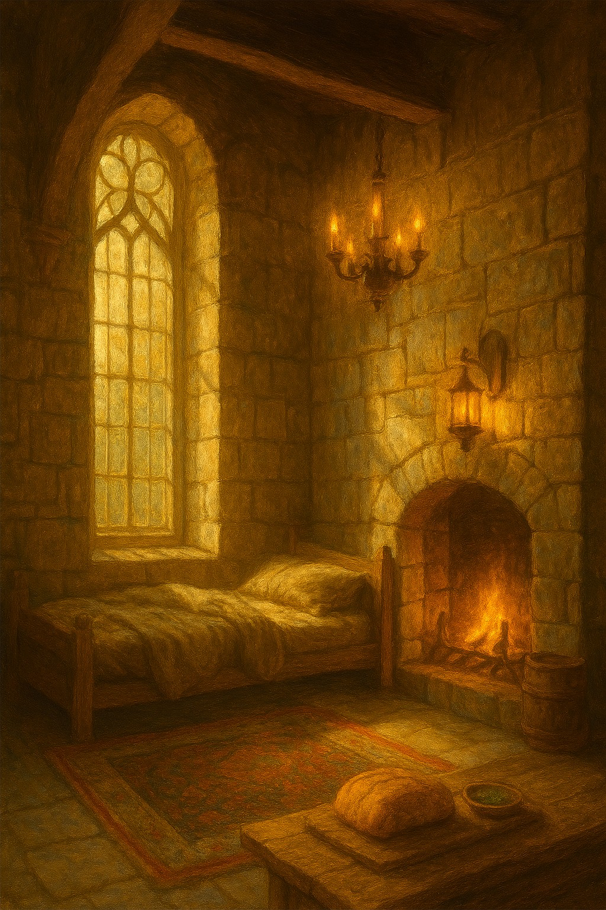
Atmosphere & Welcome
The world beyond the road is rarely at peace. Borders shift, rumours travel faster than caravans, and conflict is never far from those who move between towns and regions. Many travellers arrive carrying more than packs and provisions — they carry news of skirmishes, closed roads, lost homes, and uncertain futures. In such times, the need for safe and neutral shelter becomes as vital as food or rest. The Wayfarer’s Rest was shaped as a place apart from this turmoil. Each tavern stands as neutral ground, where disputes are left at the threshold and weapons remain sheathed. Warm hearths, shared tables, and familiar customs create a space where strangers can sit side by side without fear, if only for a night. Within these walls, the noise of the world softens. Stories replace rumours, and the road is allowed to pause. Whatever unrest waits beyond the door, all who enter are offered the same quiet welcome and the same measure of peace.
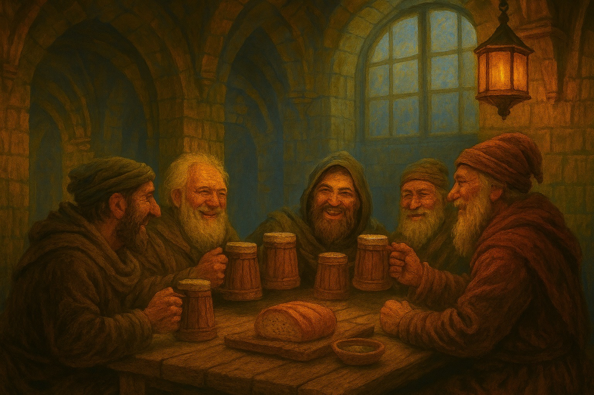
Across the Realm
From bustling trade roads to distant mountain passes, Wayfarer’s Rest taverns offer a familiar refuge wherever the road leads.
View our locationsThe World Beyond the Road
The Wayfarer’s Rest was born from upheaval rather than tradition. Its history is bound to ambition, conflict, and the consequences of actions taken by those who sought to reshape the Marchlands. What began as a response to collapse became, over generations, a network of sanctuary carried from road to road — enduring where borders and powers did not.
The Reckoning
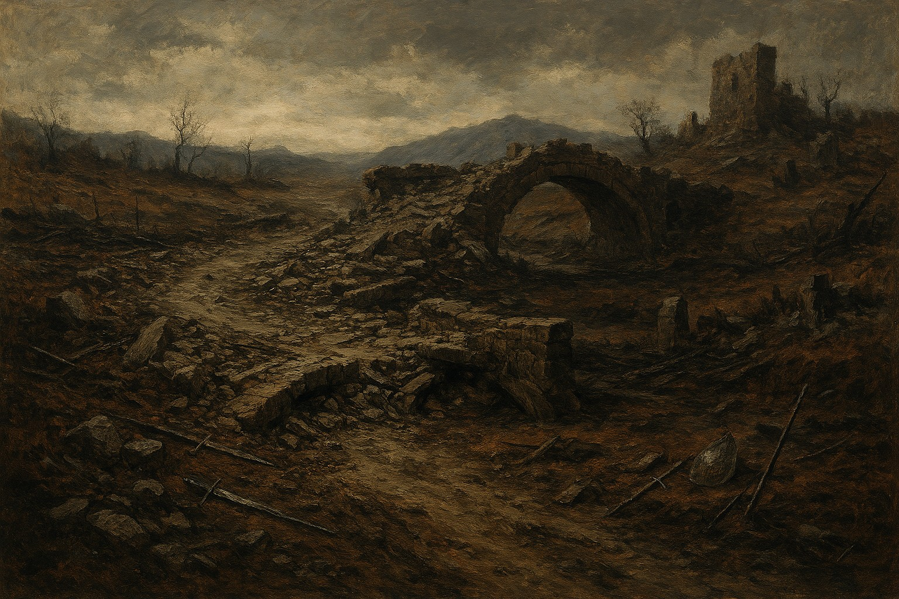
During a prolonged border war between rival powers of the Marchlands, roads and crossings were deliberately destroyed to prevent enemy movement. Bridges were burned, milestones torn down, and entire trade routes rendered unusable. When the war collapsed into stalemate, the damage was never repaired. Vast stretches of the Marchlands were left without safe passage, and those caught between settlements were forced to travel through dangerous, unprotected ground.
The First Lantern
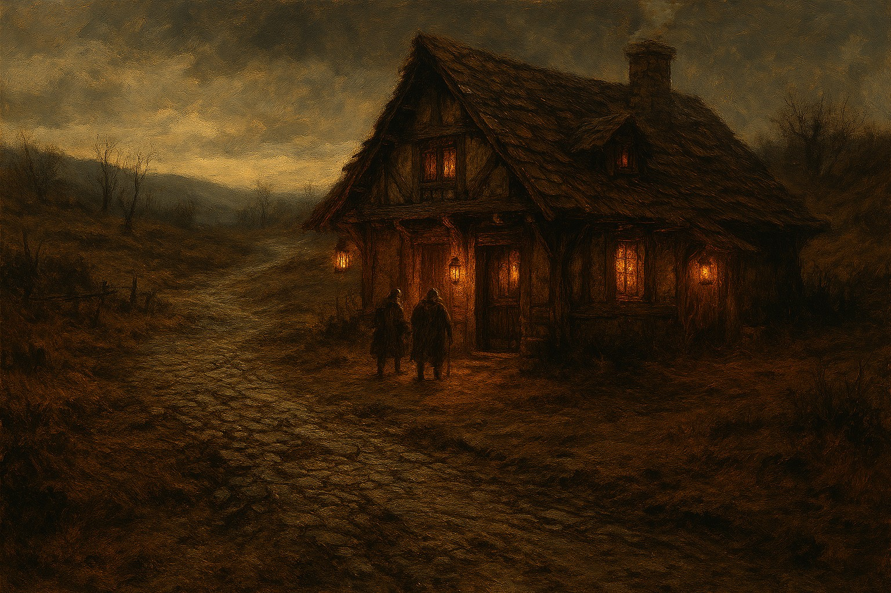
Along one of the ruined Southern trade roads, locals converted a former caravan shelter into a permanent refuge for stranded travellers. It offered shelter, food, and rest without regard for allegiance, simply responding to the need left behind by the war. This place became known as the First Lantern — not a tavern of commerce, but of necessity.
The Lantern Accord
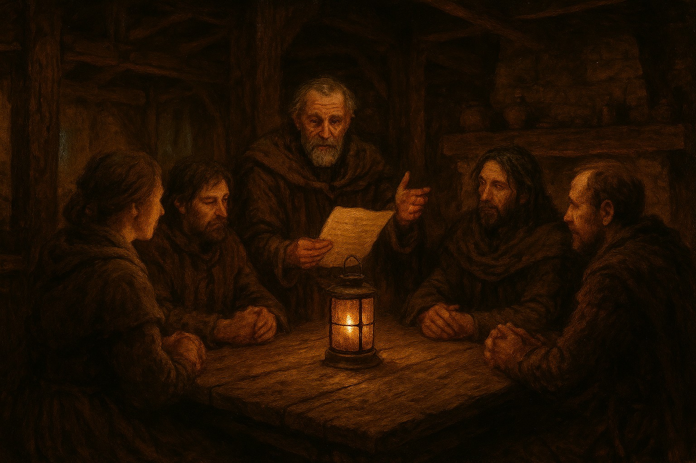
As tensions continued across the Marchlands, a former roadwarden named Aldren Waybound formalised the customs observed at the First Rest. Neutrality was declared, violence beyond the threshold forbidden, and the lantern adopted as a symbol of safe harbour. These principles became known as the Lantern Accord, and were carried from road to road.
The Rest Spreads
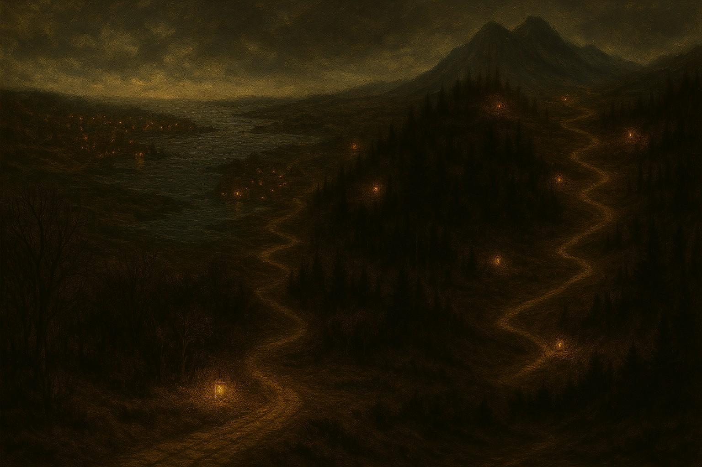
As borders hardened and travel grew more uncertain, new rests were established along surviving roads, at coastal crossings, and between distant towns. Each was adapted to its surroundings, but all upheld the same customs set down after the Reckoning. The Wayfarer’s Rest became a recognised presence across the Marchlands.
Sanctuary Amid Unrest
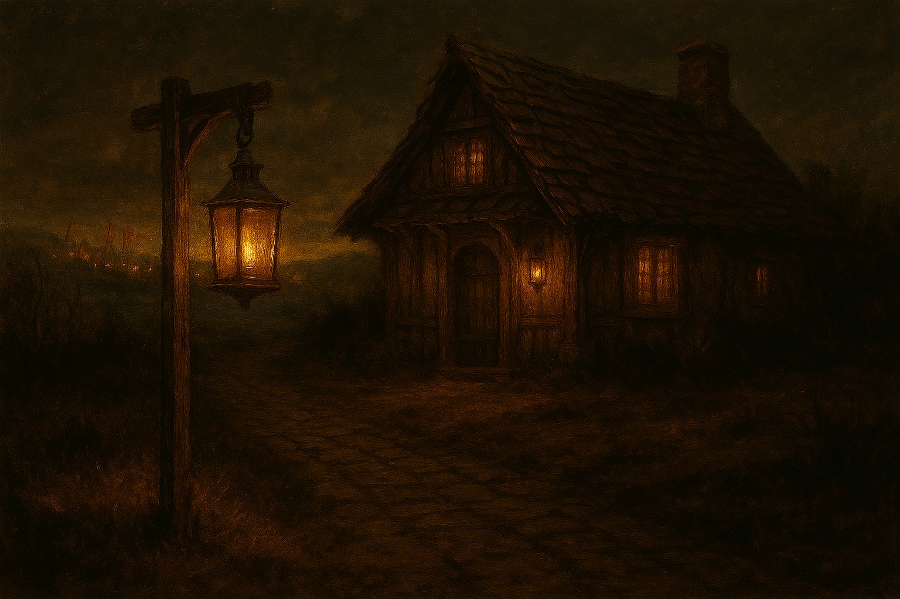
Generations after the Reckoning, conflict still flares across the Marchlands. Kingdoms rise and fall, but the Wayfarer’s Rest endures. Its taverns remain neutral ground, offering consistency in a fractured land where certainty is rare. The road may no longer be safe — but rest remains possible.
Other Services
Life on the road is unpredictable, and not every need can be met by a meal or a bed. Across the Marchlands, each Wayfarer’s Rest offers additional support shaped by its surroundings and the travellers who pass through, extending care beyond the hearth when it is needed most.
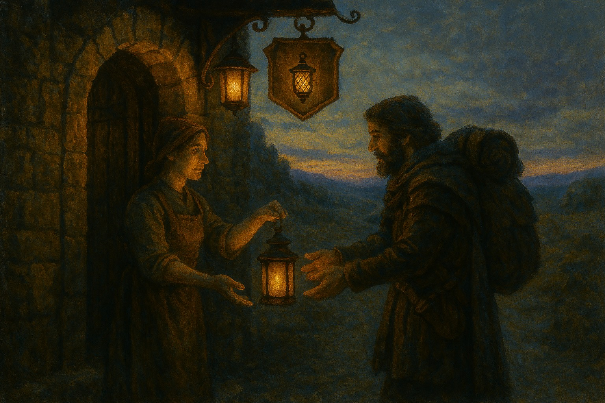
Guided Lantern Blessings
Before setting out, travellers may request a lantern prepared according to old road‑customs. These lights are said to steady the path ahead and are returned when journeys safely end.
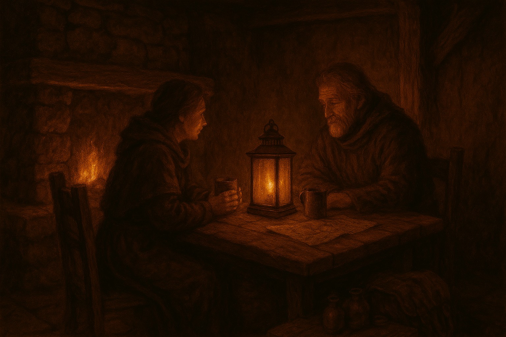
Dream Seating & Quiet Counsel
For those troubled by dreams, omens, or the weight of the road, quiet seating may be requested where travellers can speak privately with staff trained in old road‑lore.
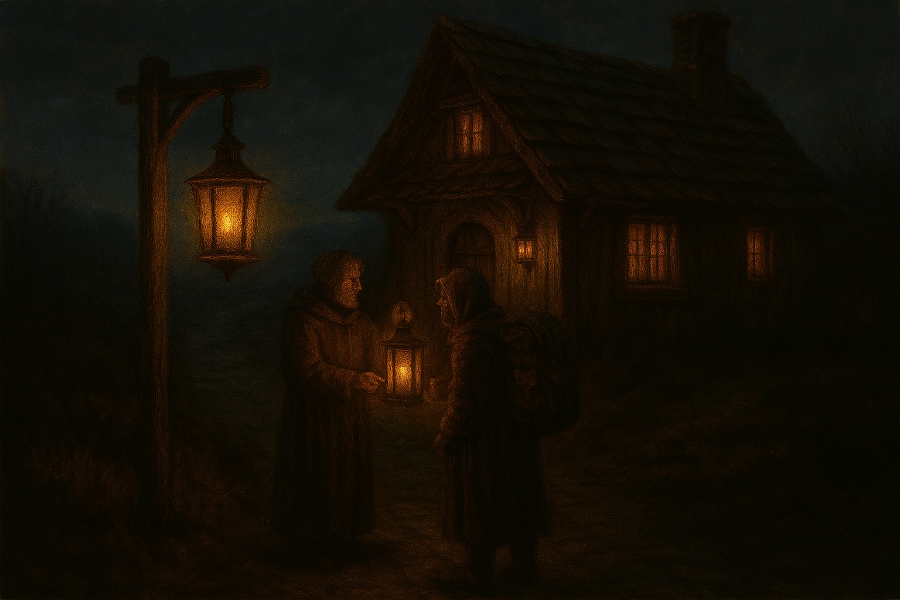
Night-Road Warnings & Watchlight
When conditions along the road are known to be unsettled, staff may share quiet warnings or keep watch‑lanterns burning through the night. Travellers remain free to depart, but rarely uninformed.
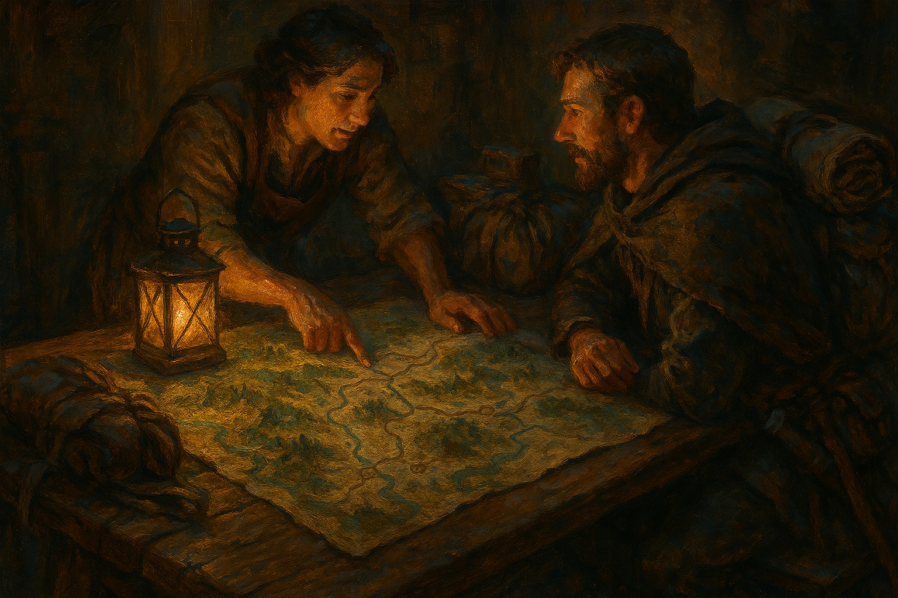
Route Marking & Quiet Guidance
Staff may offer guidance on safer routes ahead, including shared signs and markings used by those who know the road well. Such knowledge is given quietly and only when requested.